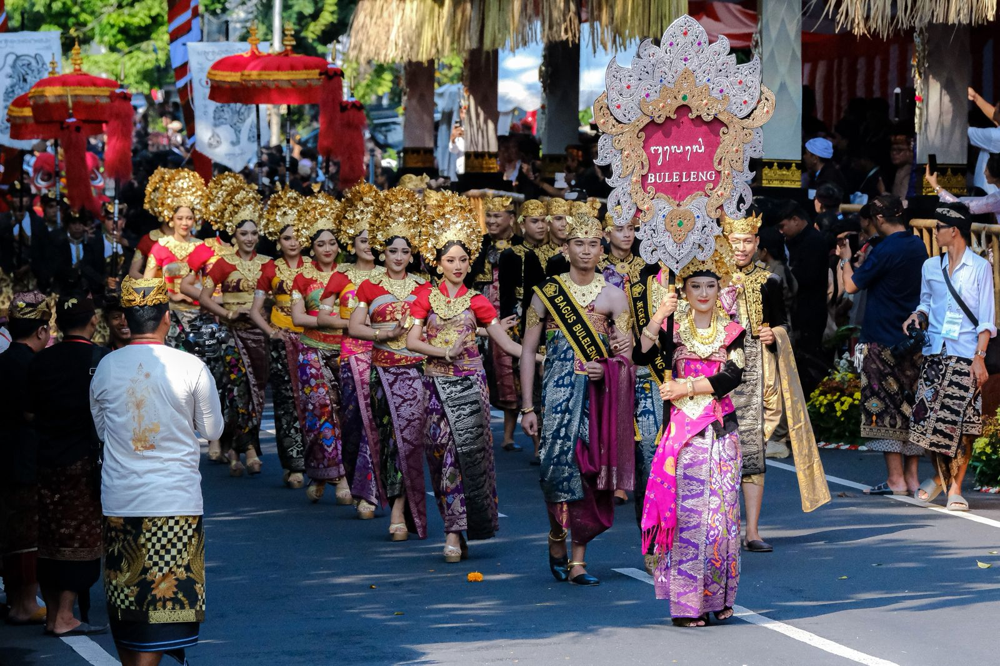

Kumpulan cerita budaya dari seluruh Nusantara

>balibercerita.com – Pesta Kesenian Bali (PKB) kembali hadir sebagai salah satu event budaya terbesar di Indonesia. PKB menjadi ruang ekspresi para seniman sekaligus penggerak utama sektor pariwisata dan ekonomi kreatif Bali. Event tahunan ini juga rutin masuk dalam program Karisma Event Nusantara (KEN) dan berhasil masuk 10 besar KEN dalam dua tahun terakhir.
Pada tahun penyelenggaraan 2025, PKB membawa dampak besar bagi masyarakat Bali. Wakil Menteri Pariwisata Ni Luh Puspa menyebut bahwa PKB bukan hanya festival budaya, tetapi juga magnet wisatawan yang memberi kontribusi signifikan terhadap ekonomi lokal.
Pada PKB 2024, tercatat dampak ekonomi mencapai sekitar Rp192,3 miliar bagi Kota Denpasar dan daerah sekitarnya. Tahun 2025, PKB kembali diselenggarakan selama satu bulan penuh, dari 21 Juni hingga 19 Juli. Dengan melibatkan lebih dari 20 ribu seniman dan ratusan pertunjukan seni, PKB diharapkan memberi manfaat ekonomi yang lebih besar lagi bagi masyarakat Bali.
Pesta Kesenian Bali pertama kali digelar pada tahun 1979. Sejak awal, festival ini menjadi panggung utama untuk memperkenalkan kekayaan seni Bali, seperti tarian tradisional, gamelan, hingga karya kerajinan tangan. PKB konsisten menjadi festival budaya terpanjang di Indonesia yang menjaga warisan leluhur sambil mengikuti perkembangan zaman.
Pembukaan PKB hampir selalu dilakukan oleh tokoh penting negara, mulai dari menteri hingga presiden, menunjukkan betapa pentingnya event ini dalam konteks seni dan pariwisata nasional.
PKB ke-47 tahun ini mengangkat tema “Jagat Kerthi Lokahita Samudaya” yang berarti Harmonis Semesta Raya. Tema ini terinspirasi dari filosofi Tri Hita Karana—harmoni antara manusia, alam, dan Tuhan. Tema ini juga menjadi bagian terakhir dari Sad Kerthi yaitu Jagat Kerthi yang menekankan pentingnya menjaga keseimbangan alam semesta.
Pada tahun 2025, PKB menghadirkan 10 kegiatan besar yang menjadi inti festival:
Pesta Kesenian Bali 2025 diselenggarakan di 15 venue dalam kawasan Taman Budaya Provinsi Bali, termasuk: